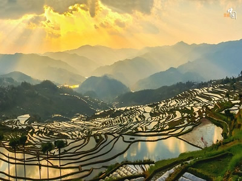
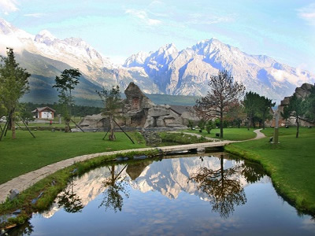

去雲南秘境
麗江古城

麗江古城的歷史可以追溯到唐朝時期，並在明朝時期達到了鼎盛時期。
佔地面積約3.8平方公里，以石板路、小橋、流水、廊棚和古老的建築為特色，建築風格融合了漢族、納西族、藏族、滿族等多種文化特點。
古城中心是“四方街”，街上設有祭祀所、茶館、書店、藥店等傳統商業場所，還有許多小吃攤位，是遊客品嚐當地美食的好去處。
此外，麗江古城周邊還有許多景點，如束河古鎮、玉龍雪山、虎跳峽等，都是遊客前來麗江旅遊的熱門景點。
石門關風景區

位於大理點蒼山西坡漾濞縣境內，是蒼山國家地質公園、國家級自然保護區、國家級風景名勝區蒼洱景區的重要組成部分。
景區內有雄奇的高山峽谷、險峻的懸崖峭壁、清澈的瀑布溪流、壯美的高山草甸以及變化萬千的神奇氣象等自然景觀。
大峡谷風景區位於石門關風景區上游，是一個以峽谷風光為主體的自然風景區。
還可以參觀石門關博物館，了解當地歷史和文化，或者到當地村落體驗民俗活動和品嚐當地特色美食。
噶丹松贊林寺

松贊林寺，依山而建，面湖而居，氣勢恢弘，莊嚴神秘，是雲南藏傳佛教的首要寺廟。為該寺選址時，達剌喇嘛占卜得神示：“林木深幽現清泉，天降金鶩戲其間”。
現在的寺內有清泉淙淙，春夏不溢，秋冬不涸，並能常見一對金鶩出入。松贊林寺坐北朝南，外圍築有橢圓形城垣，扎倉、吉康兩大主殿位於寺中心的最高點。
寺廟的主體建築—白塔，是標誌性建築，金塔則是佛教信徒朝聖之地。寺內有眾多的經典、佛像、壁畫等藝術品，還有佛教的學習和修行場所。
撒瑪壩萬畝梯田

撒瑪壩萬畝梯田，被譽為“亞洲第一大梯田”。建於元朝至明朝時期，主要由當地的哈尼族人興建。
梯田系統依山傍水而建，從山頂一直延伸到山腳，形成了一個壯觀的梯田景觀。梯田系統是哈尼族人用傳統方法建造的，主要利用山泉水和雨水灌溉。
整個系統由上至下分為十多層，每一層都有灌溉系統，這樣可以保證每一層梯田都能得到足夠的水源。
哈尼族人在建造梯田的過程中，形成了許多有趣的文化傳統，例如祭祀活動、民間音樂、傳統服飾等。
玉龍雪山

玉龍雪山是一個自然保護區，有著豐富的生物多樣性。在這裡可以看到許多野生動物，植被也十分豐富，有許多珍貴的植物品種，如杜鵑花、銀杏等。
還是一個重要的旅遊勝地，每年吸引著大量的遊客前來觀光旅遊。遊客可以從騰沖縣城出發前往，途經“虎跳峽”、“藏區村落”等景點，欣賞到許多美麗的風景。
遊客可以漫步在山林之中，欣賞到壯麗的山峰、瀑布和高山湖泊，還可以參觀當地的藏族和納西族村落，了解他們的文化和生活方式。